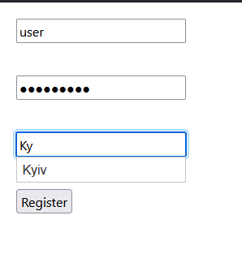
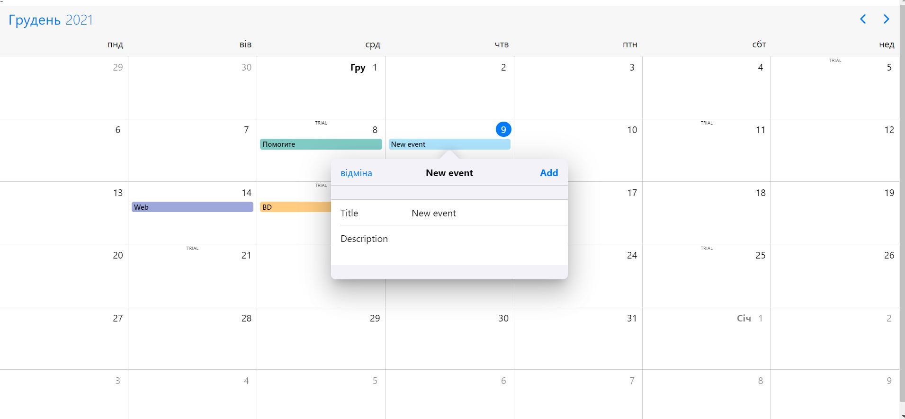
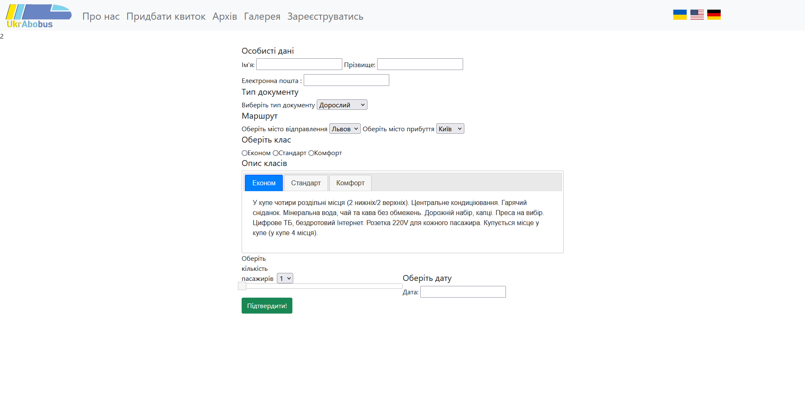

Тітов Є. О,
Юдаков О. С.
Тітов Є. О,
Юдаков О. С.
ЛАБОРАТОРНА РОБОТА №9
Тема:АСИНХРОННА ВЗАЄМОДІЯ КЛІЄНТСЬКОЇ І СЕРВЕРНОЇ ЧАСТИН WEB- ЗАСТОСУВАНЬ З ИКОРИСТАННЯМ ТЕХНОЛОГІЇ AJAX. ФОРМУВАННЯ AJAX-ЗАПИТУ ЗАСОБАМИ JQUERY.
Мета: придбати практичні навички роботи основ асинхронного обміну даними мовою JavaScript за допомогою технології Ajax та бібліотеки Jquery, формування Ajax-запиту засобами jQuery при реалізації практичних задач Web-програмування
Розташування лабораторної: GitHub Лабороторна робота №9
AJAX запит(по варіантам)
- Вавринюк Інтерактивна HTML-форма
- Лємєшова Ajax-фотогалерея
- Тітов Ajax-щоденник
- Юдаков Ajax планувальник справ


AJAX запити у власному сайті
Перше застосування AJAX запиту у нас використовується на сторінці, там ми динамічно підгружаємо міста.  Інші наші AJAX запити будуть знаходиится на адмінській сторінціПовний список функціоналу програми
На кінець 9 лабораторної роботи ми маємо сайт UkrAbobus - застосунок, який дозволяє максимально спростити вашу подорож.
Користувач в змозі обрати зручний для нього засіб пересування, комфортний час та маршрут.
Також у нас присутня форма авторизування для нових юзерів, а також адмінська сторінці, на котрій можна буде побачити усіх
юзерів, подивитися придбані квитки або можна видалити юзера.
Список функціоналу нашого сайту:
- Перегляд розкладу:
- Потягів
- Літаків
- Автобусів
- Придбання квитків:
- На потяг
- На літак
- На автобус
- Вибір напряму поїздки
- Форма авторизування
- Зміна мови сайту
- Посилання на соц. мережі
Порівняння функціоналу першої та дев'ятої роботи
У функціоналі нашої першої лабораторної роботи можно було вибрати лише тип транспорту.
На момент дев'ятої лабораторної, ми маємо, окрім вище зазначеного:- Перегляд розкладу
- Придбання квитків із вибором типу документів, класу транспорту і тд.
- Форма авторизування
- Вибір напряму поїздки
- Зміна мови сайту
- Посилання на соц. мережі
- Адмінська сторінка
Висновки: Протягом цієї лабораторної роботи ми придбали практичні навички роботи основ
асинхронного обміну даними мовою JavaScript за допомогою технології Ajax та бібліотеки Jquery,
формування Ajax-запиту засобами jQuery при реалізації практичних задач Web-програмування.
Також ми проаналізували та порівняли результати першої та дев'ятої лабораторних робіт